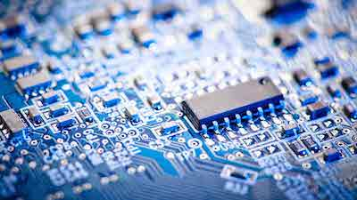

Hardware engineering field in IT industry expects high understanding of PCB Layouts, how systems works and what every bit of hardware is being used for depending on the system. The main role of IT engineer is to keep an eye out for any systems issue’s that can be solved to avoid data loss or systems functionality difficulties. Computer systems engineering tamper with the boundary between theory and practice, requiring specialists to acquire both in order to succeed. As technology grows the government, businesses and corporations amplify in inventions, so with it, the demand for expertise in these fields is also rapidly growing.
As a person without specified hobby I used to spend most of my free time drawing, at the same time being a computer gamer, that’s where my journey started. At the time of my secondary education which has helped me acquire basic skills with programming and develop a good approach to computers, I was ambitious and enthusiastic person and had enormous satisfaction after building or creating things. Together with my uncle, I played games and shared similar interests. I used to admire him for his general knowledge in computer science. It was a time when I didn't have the opportunity to use a computer too often and had to ask my older brother if I’m allowed to. When I heard that my uncle bought his new components to construct a new computer, I had a sudden realisation that it is time to compose my own system. I saved some money, made a brief research, and I constructed my own computer, that's how this field of IT has then become my passion.